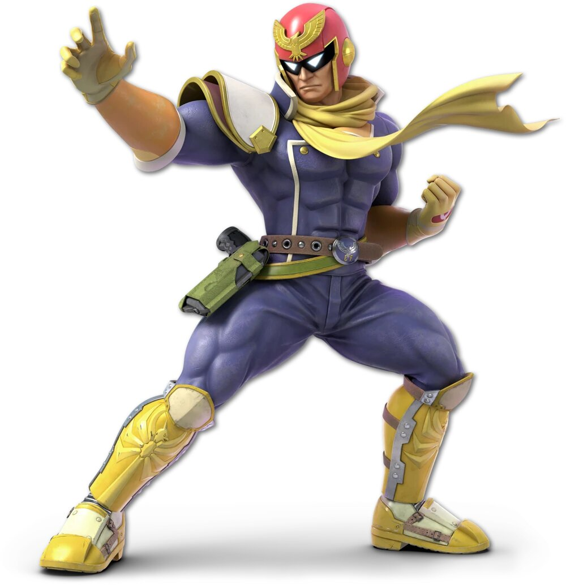

Personnages
 |
 |
 |
 |
 |
 |
 |
 |
 |
 |
 |  |
Mario
 Mario est un personnage de jeu vidéo devenu la mascotte de Nintendo, facilement reconnaissable à sa moustache,
à sa salopette, à ses gants blancs et à sa casquette rouge marquée d'un M inscrit dans un cercle blanc. Né de
l'imagination du concepteur de jeux Shigeru Miyamoto, il est italo-américain.
Mario est un personnage de jeu vidéo devenu la mascotte de Nintendo, facilement reconnaissable à sa moustache,
à sa salopette, à ses gants blancs et à sa casquette rouge marquée d'un M inscrit dans un cercle blanc. Né de
l'imagination du concepteur de jeux Shigeru Miyamoto, il est italo-américain.
Dans les années 1980, Mario Segale a
loué un dépôt à Nintendo of America, qui a décidé de donner son prénom « Mario » à la star de son nouveau jeu vidéo
qui remplace le personnage qui apparaît pour la première fois en 1981, dans le jeu Donkey Kong, sous le nom de
Jumpman; mais depuis 1985 c'est la série à succès des Super Mario qui a fait de lui un phénomène mondial et l'un
des personnages emblématiques du jeu vidéo. Depuis, Mario a accompagné toutes les consoles de Nintendo.
Donkey Kong
Donkey Kong est un personnage de fiction apparu en 1981 dans le jeu vidéo
éponyme (arcade et jeu électronique). Créé par Shigeru Miyamoto, ce gorille est à l'origine l'ennemi de
Jumpman (qui deviendra Mario par la suite), son maître dont il a enlevé la fiancée.
Donkey Kong devient ensuite, entre autres grâce aux Donkey Kong Country, un sympathique gorille costaud dans la moyenne
qui, pour le prix de quelques bananes, poursuivra, à l'aide de son meilleur ami, un petit singe agile et
rapide nommé Diddy Kong, un gros et cruel crocodile balourd nommé King K. Rool. Lors du jeu suivant, c'est
la petite Dixie Kong qui prend la relève lorsque Donkey Kong se fait enlever. Elle terminera ensuite la
mission à l'aide de son cousin le gros bébé Kiddy Kong.
Un dessin animé en 3D en son honneur permet aussi d'en apprendre plus sur les personnages (singes) secondaires qui animent le jeu : Cranky Kong, un vieux
singe bougon mais néanmoins sympathique par ses nombreux conseils, Candy Kong, la petite amie de Donkey Kong,
Funky Kong, le singe rebelle toujours là avec son avion ou sa planche, sans oublier Lanky, Tiny, Cranky et
Chunky Kong qui l'aideront le temps de Donkey Kong 64. arcade
Link
Link (リンク, Rinku?) est un Hylien, bien qu'il ait grandi parmi le peuple Kokiri dans Ocarina of Time,
et le héros principal de la série de jeux vidéo The Legend of Zelda éditée par Nintendo. Cette série a
été créée par Shigeru Miyamoto qui a également procédé au graphisme même de Link
(vêtu de vert, aux oreilles pointues, tenant une épée ainsi qu'un bouclier). The Legend of Zelda est un
noyau dur de Nintendo au même titre que la série des Mario. En 2007, plus de 47 millions d’exemplaires ont
été vendus à travers le monde.
La première apparition du personnage prénommé Link date de 1986
dans le premier jeu de ce qui va devenir une saga, édité sous le titre The Legend of Zelda - ce qui explique
le nom éponyme de la saga qui en découle. Link a été représenté dans d’autres jeux vidéo de Nintendo ne se
centrant pas sur sa propre série comme les multiples Super Smash Bros. Des mangas officiels reprennent une
partie de l'histoire de la saga ainsi qu'un programme d’animation à la télévision. De très nombreux produits
dérivés sont vendus avec l'effigie de Link ou divers éléments du jeu (comme l'épée Master Sword, la Triforce
et le bouclier d'Hylia). En tant que personnage, Link a été récompensé d’une étoile lors du Walk of Game en
2005, aux côtés de Mario, lui aussi de Nintendo et de Sonic le hérisson de Sega.
Link est dépeint lors de sa première apparition dans la série comme un garçon hylien, pas encore adulte,
provenant du pays (imaginaire et spécifique au jeu) nommé Hyrule. À l’origine simple jeune épéiste, se retrouvant
a devoir combattre de nombreux ennemis pour sauver sa vie, ce personnage a son apparence qui change d’un jeu à
l’autre pour ses yeux, ses cheveux, ainsi que les armes et techniques de combat qu'il peut employer. Son âge varie
également. En effet, Link ne suit pas une suite linéaire totale avec un seul et même personnage unique pour toute la
saga (contrairement à Mario).
Samus
Samus Aran (サムス・アラン, Samusu Aran?) est un personnage de fiction et la protagoniste de la série de
jeux vidéo de science fiction Metroid.
Créée par Hiroji Kiyotake, elle fait sa première apparition en 1986
dans le jeu Metroid. Samus Aran est une ex-soldat de la Fédération galactique devenue une chasseuse de
primes intergalactique, généralement équipée d'une armure motorisée avec des armes qui incluent des armes
à énergie dirigée et des missiles6, ainsi que la capacité à prendre la forme d'une boule, la morphing ball.
Yoshi
 Yoshi (ヨッシー, Yosshī?) est un personnage fictif de jeu vidéo créé par le japonais Shigefumi Hino.
Il apparaît dans les jeux vidéo édités par Nintendo, d'abord dans la série Super Mario où il accompagne
Mario et Luigi, puis dans sa propre série avec, entre autres, Super Mario World 2: Yoshi's Island.
Il fait également des apparitions dans plusieurs séries spin-off telles que Mario Party, Mario Kart et
Super Smash Bros.
Yoshi (ヨッシー, Yosshī?) est un personnage fictif de jeu vidéo créé par le japonais Shigefumi Hino.
Il apparaît dans les jeux vidéo édités par Nintendo, d'abord dans la série Super Mario où il accompagne
Mario et Luigi, puis dans sa propre série avec, entre autres, Super Mario World 2: Yoshi's Island.
Il fait également des apparitions dans plusieurs séries spin-off telles que Mario Party, Mario Kart et
Super Smash Bros.
Initialement, Yoshi se présente sous la forme d'un reptile. Par extension, son nom désigne
aussi une espèce animale qui peut avoir d'autres couleurs. Il peut avoir une teinte bleu clair ou foncé,
orange, verte, jaune, rose, violette, brune, noire, blanche ou rouge, mais la plus connue reste la verte.
Le mot « Yoshi » (良し ou よし) en japonais signifie : « oui », « bien », « super », « chance »
(et autres mots positifs).
Kirby
 Kirby est un personnage de jeu vidéo, créé par Masahiro Sakurai pour la firme Nintendo. C'est une petite
boule rose (qui est vraiment grandiose) originaire de la planète Popstar et qui aspire ses ennemis pour
« copier » leurs pouvoirs.
Kirby est un personnage de jeu vidéo, créé par Masahiro Sakurai pour la firme Nintendo. C'est une petite
boule rose (qui est vraiment grandiose) originaire de la planète Popstar et qui aspire ses ennemis pour
« copier » leurs pouvoirs.
Apparu pour la première fois dans Kirby's Dream Land sur Game Boy,
il est le protagoniste principal de nombreux jeux et le héros de l'anime Kirby: Right Back at Ya!.
Fox
Fox McCloud (フォックス・マクラウド, Fokkusu Makuraudo?) est un personnage de jeu vidéo originaire de la
série de jeux vidéo Star Fox de Nintendo. Il a été créé par Shigeru Miyamoto et conçu par Takaya Imamura
en 1993, lors du développement de Star Wing.
Il s’agit d’un renard anthropomorphique, personnage
principal de la série. Il est le meneur de l’unité de mercenaires d'élite Star Fox.
Fox McCloud est devenu particulièrement populaire, et fait partie de la mythologie Nintendo.
Il est apparu dans les cinq jeux de la série Star Fox, mais également dans les cinq épisodes de la série
Super Smash Bros..
Pikachu
 Pikachu (ピカチュウ, Pikachū?) est une espèce de Pokémon, une créature de fiction issue de la franchise
médiatique Pokémon de Nintendo. Il est apparu la première fois au Japon en 1996, dans les jeux vidéo
Pokémon Vert et Pokémon Rouge, créés par Satoshi Tajiri. Initialement conçu comme un personnage secondaire,
Pikachu est devenu la mascotte de l'univers Pokémon après avoir été choisi comme personnage principal dans
l'adaptation télévisuelle du jeu, aux côtés de son dresseur Sacha. Il apparaît depuis de manière récurrente
dans le marketing de la franchise, au point de désigner parfois celle-ci par métonymie.
Pikachu (ピカチュウ, Pikachū?) est une espèce de Pokémon, une créature de fiction issue de la franchise
médiatique Pokémon de Nintendo. Il est apparu la première fois au Japon en 1996, dans les jeux vidéo
Pokémon Vert et Pokémon Rouge, créés par Satoshi Tajiri. Initialement conçu comme un personnage secondaire,
Pikachu est devenu la mascotte de l'univers Pokémon après avoir été choisi comme personnage principal dans
l'adaptation télévisuelle du jeu, aux côtés de son dresseur Sacha. Il apparaît depuis de manière récurrente
dans le marketing de la franchise, au point de désigner parfois celle-ci par métonymie.
Pikachu
est imaginé par Atsuko Nishida de Game Freak et dessiné par Ken Sugimori à partir du sprite des versions
Rouge et Verte. Il est créé en même temps que son évolution, Raichu ; à partir de la seconde génération,
il est également doté d’une pré-évolution, Pichu. Pikachu est de type électrique et occupe le 25e
emplacement dans le Pokédex national, l'encyclopédie qui recense les différentes espèces de Pokémon.
Considérée comme une icône de la culture kawaii et présenté par Anne Allison (en), une professeur
d'anthropologie culturelle, comme l'équivalent japonais de Mickey Mouse, il est devenu mondialement célèbre
et réapparaît parodié dans d'autres séries animées comme Les Simpson ou Drawn Together.
Il est le Pokémon le plus reconnu de la franchise.
Luigi
Luigi (ルイージ, Ruīji?) est un personnage de jeu vidéo, frère de Mario dans la série de jeux vidéo du même nom.
Il apparaît pour la première fois en 1983 dans Mario Bros. sur Game and Watch en tant que frère jumeau de Mario,
deux ans après la première apparition de ce dernier dans Donkey Kong en 1981.
Également plombier, Luigi
est très semblable physiquement à Mario. Initialement, il se distingue uniquement par ses vêtements verts, en
opposition au rouge de Mario, mais adopte par la suite des particularités plus marquées telles qu'une taille
plus importante ou une façon différente de se mouvoir, qui collent généralement avec son caractère naïf et
maladroit voulu par Nintendo.
Bien que cantonné aux seconds rôles à ses débuts, le personnage fait petit
à petit l'objet de jeux à part entière, à commencer par Luigi's Mansion, sorti pour le lancement de la GameCube en
2001.
Ness
Ness est le nom par défaut du héros du jeu EarthBound sur Super Nintendo. Ness est l'anagramme de SNES.
Il vit avec sa mère et sa sœur dans la banlieue de Onett, une bourgade tranquille dans le pays d'Eagleland.
On ne voit jamais son père, on sait juste qu'il vit à l'extérieur de la maison (cependant, les sauvegardes
s'effectuent en lui téléphonant, et que c'est lui qui donne l'argent de poche à Ness à mesure qu'il combat,
en faisant des virements réguliers sur le compte bancaire de ce dernier).
Portant sa casquette
rouge, son chandail à rayures horizontales jaune et violet et ses pantalons violets, il doit sauver le
monde, investi de cette mission par le guerrier du futur métamorphosé en abeille : Buzz Buzz. Ness est doté
de pouvoirs PSI et combat à l'aide d'objets du quotidien, avec une prépondérance pour la batte de baseball
ou le yo-yo. Il se fera plusieurs amis au cours de l'aventure : Paula, la fille aux pouvoirs psychiques
surdéveloppés résidant à Twoson, Jeff, un garçon très intelligent originaire de Winters et Poo, le prince
de Dalaam.
Captain Falcon
 Captain Falcon (キャプテン・ファルコン, Kyaputen Farukon?) est un personnage de la série de jeux vidéo de
course, F-Zero. Il pilote le Blue Falcon, vaisseau de course ultra-rapide, avec lequel il a gagné le Grand
Prix F-Zero X. Lorsqu'il ne fait pas de courses, il travaille comme chasseur de prime. Il a capturé un grand
nombre de criminels. Cependant, les criminels ne sont pas les seuls victimes du capitaine. Vous l’aurez compris,
le capitaine ou el capitano comme on l’aime a l’appeler dans les confins les plus éloignés de la galaxie, est un
véritable bourreau des cœurs. "Un problème mesdemoiselles? Alors Falcon Intervention" comme aime dire celui-ci.
Ses conquêtes sont innombrables, la liste est encore plus longues que les tours de pistes qu’il avale à bord de
son super Blue Falcon. Son torse bombé et ces cuisses d'apollon n'y sont pas pour rien dans ce succès, c'est un
véritable faucon en d'autres termes !
Captain Falcon (キャプテン・ファルコン, Kyaputen Farukon?) est un personnage de la série de jeux vidéo de
course, F-Zero. Il pilote le Blue Falcon, vaisseau de course ultra-rapide, avec lequel il a gagné le Grand
Prix F-Zero X. Lorsqu'il ne fait pas de courses, il travaille comme chasseur de prime. Il a capturé un grand
nombre de criminels. Cependant, les criminels ne sont pas les seuls victimes du capitaine. Vous l’aurez compris,
le capitaine ou el capitano comme on l’aime a l’appeler dans les confins les plus éloignés de la galaxie, est un
véritable bourreau des cœurs. "Un problème mesdemoiselles? Alors Falcon Intervention" comme aime dire celui-ci.
Ses conquêtes sont innombrables, la liste est encore plus longues que les tours de pistes qu’il avale à bord de
son super Blue Falcon. Son torse bombé et ces cuisses d'apollon n'y sont pas pour rien dans ce succès, c'est un
véritable faucon en d'autres termes !
Héros au grand cœur, le Capitaine Falcon aime participer aux
mondanités des simples motels. Dans ces cas, il n’hésite pas à vêtir sa magnifique golden combinaison, il exige
alors qu’on l’appelle Golden Falcon. Son amour pour les belles femmes n'est toutefois pas suffisant pour définir
le Captain Falcon, roi des cieux et véritable justicier de son époque. Parmi les vertus les plus notables
d'El Capitano, on peut citer son sens des responsabilités et du devoir, le goût du travail bien fait, et une
âme de guerrier qu'il utilise pour sévir ses adversaires sur le champ de bataille. Tout comme la foudre, le
Capitaine peut frapper à tout moment ! Un temps orageux, une atmosphère électrique dans l'air? Attention
c'est sûrement le Captain...
Avec son célèbre Falcon kick, il envoie ses adversaires tout droit
prendre un ticket vers la justice. Attention également à ne pas être dans le parage quand le Captain décoche son
Falcon Punch, véritable coup de massue pour tout malheureux qui viendrait s'y coller.
Captain Falcon
est un personnage fortement inspiré de Judge Dredd, que ce soit au niveau de son apparence aussi bien que de son
histoire personnelle
Rondoudou
 Toudoudou (ププリン, Pupurin?, dans les versions originales en japonais) et ses évolutions Rondoudou
(プリン, Purin?) et Grodoudou (プクリン, Pukurin?) sont trois espèces de Pokémon.
Toudoudou (ププリン, Pupurin?, dans les versions originales en japonais) et ses évolutions Rondoudou
(プリン, Purin?) et Grodoudou (プクリン, Pukurin?) sont trois espèces de Pokémon.
Issus de la
célèbre franchise de médias créée par Satoshi Tajiri, ils apparaissent dans une collection de jeux vidéo
et de cartes, dans une série d'animation, plusieurs films, et d'autres produits dérivés, ils sont imaginés
par l'équipe de Game Freak et dessinés par Ken Sugimori. Alors que Rondoudou et Grodoudou font leur première
apparition au Japon en 1996, dans les jeux vidéo Pokémon Vert et Pokémon Rouge et appartient donc à la
première génération de Pokémon, Toudoudou n'a été créé qu'avec la deuxième comme la pré-évolution de
Rondoudou. Ils sont du double type normal et fée et occupent respectivement les 174e, 39e et 40e emplacements
du Pokédex national, l'encyclopédie qui recense les différentes espèces de Pokémon.